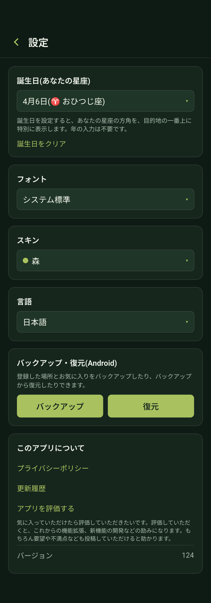
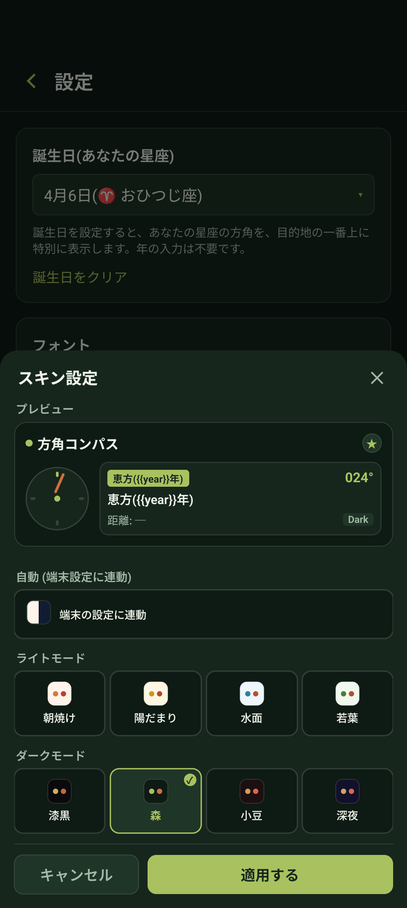

📖 はじめに（この画面でできること）
コンパス画面右上の「設定」ボタンをタップすると、アプリ全体のカスタマイズやデータ管理を行う設定画面が開きます。

♈ 1. 誕生日（あなたの星座）の設定
ご自身の誕生日（月日）を登録すると、あなたの星座が目的地の最上部に特別表示されます。
月日の選択
「誕生日（あなたの星座）」欄をタップし、誕生月日を選択します（生まれた年は不要です）。自動で12星座（例：おひつじ座、おうし座など）が割り当てられます。
目的地の最上部に優先表示
設定すると、目的地選択ドロワーの一番上にあなたの星座が表示され、夜空に輝く星座の方角をいつでも即座に向くことができます。
誕生日のクリア
表示を解除したい場合は、「誕生日をクリア」をタップするだけでいつでも初期状態に戻せます。
🔤 2. フォントのカスタマイズ
アプリ全体のテキストフォントを、お好みの雰囲気に合わせて変更できます。
システム標準のほか、きれい系・強め系・かわいい系の3カテゴリー・全9書体から選択可能です。設定したフォントはコンパス画面やメニュー全体に即時反映されます。
🎨 3. スキン（カラーテーマ）の設定
気分や好みに合わせて、コンパスや背景のカラーリングを自由に変更できます。

端末の設定に連動
「端末の設定に連動」をONにすると、スマホ本体のダークテーマ設定に応じてライトモード用スキンとダークモード用スキンが自動的に切り替わります。
ライトモード用スキン（4種類）
🌅 朝焼け / ☀️ 陽だまり / 🌊 水面 / 🌿 若葉 の明るく清潔感のあるテーマから選べます。
ダークモード用スキン（4種類）
⬛ 漆黒 / 🌲 森 / 🫘 小豆 / 🌌 深夜 の落ち着いたダークテーマから選べます。
「適用する」で保存
上部のプレビューで確認しながら好みの配色を選び、「適用する」ボタンをタップして確定します。
🌐 4. 言語の切り替え
ゆびさすコンパスは以下の全12言語に対応しています：
日本語 / 英語（English） / 簡体字中国語（简体中文） / 繁体字中国語（繁體中文） / 韓国語（한국어） / スペイン語（Español） / ポルトガル語（Português） / フランス語（Français） / ドイツ語（Deutsch） / ロシア語（Русский） / インドネシア語（Bahasa Indonesia） / イタリア語（Italiano）
端末の標準言語に自動追従するほか、設定画面からいつでも任意の言語を手動選択できます。
💾 5. バックアップと復元（データ移行）
登録した場所、お気に入り、通知スケジュール、設定したカスタム針の写真データを安全にバックアップ・復元できます。
バックアップの作成
「バックアップ」ボタンをタップすると、保存ダイアログが開きます。Googleドライブや端末内のフォルダを指定して、バックアップファイル（JSON形式）を保存してください。
データの復元
機種変更後やアプリ再インストール時に「復元」ボタンをタップし、保存しておいたバックアップファイルを選択します。登録した場所や針のデザインが一括で元の状態に戻ります。
❓ よくある質問
いいえ、有効期限はありません。定期的にバックアップを取っておくことで、万が一の端末故障や紛失の際にもいつでも復元できます。
はい、選択したフォントやスキン設定、誕生日の情報もバックアップデータに含まれます。